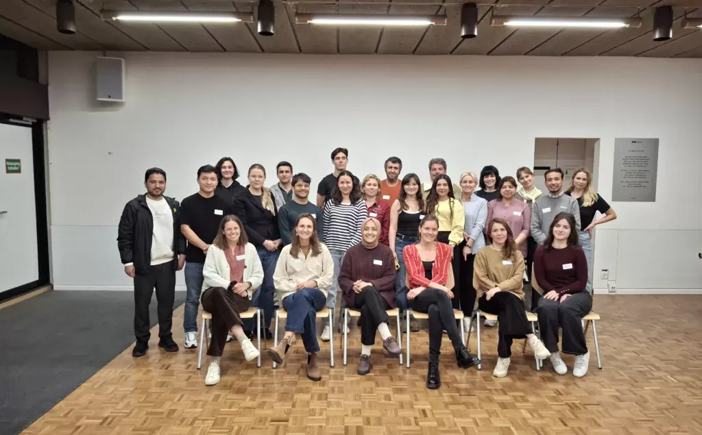
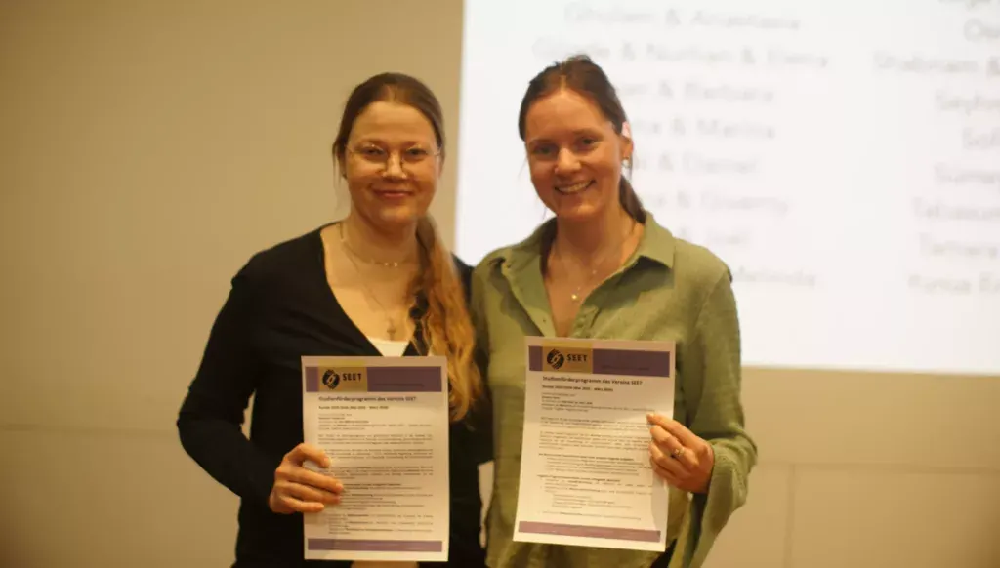
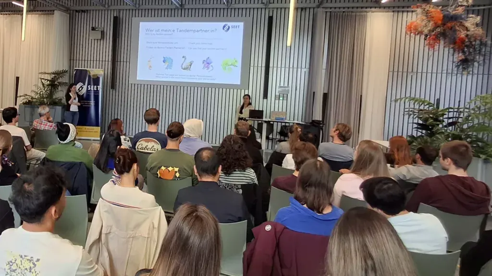

Die Teilnahme an diesem Programm hat meine Erwartungen übertroffen
Enrolling in SEET’s programme has exceeded my expectations!
« Participer à ce programme a dépassé mes attentes »
SEET ist die einzige Organisation in der Schweiz, die Geflüchtete unabhängig von den Universitäten selbst beim Zugang zur Hochschulbildung unterstützt. Das Studienförderungs-Programm von SEET vernetzt Geflüchtete mit Mentorinnen und Mentoren, die sie wertvoll dabei unterstützen, sich im Schweizer Bildungssystem zurechtzufinden.
Wir haben mit Giverny Ganz gesprochen, um mehr über ihre persönliche Motivation zu erfahren, SEET-Mentor zu werden.
Giverny, erzählen Sie uns etwas über Ihren persönlichen Hintergrund und was Sie derzeit tun.
Hallo! Mein Name ist Giverny und ich bin Schweizerin und Südafrikanerin. Ich bin in Südafrika aufgewachsen und mit 18 Jahren in die Schweiz gezogen, um Biologie zu studieren. Ich habe meinen Master of Science in 2019 abgeschlossen und arbeite seitdem als wissenschaftliche Mitarbeiterin.
Wann und wo sind Sie erstmals auf SEET und das Studienförderungs-Programm aufmerksam geworden?
Das erste Mal hörte ich in 2019 vom SEET-Programm, als eine Freundin von mir daran teilnahm. Sie schlug mir vor, Mentorin zu werden, da ich gerade mein Studium abgeschlossen hatte und mir noch nicht sicher war, in welche berufliche Richtung ich gehen wollte habe ich mich damals noch nicht angemeldet. Im Jahr 2024 bin ich dann erneut auf SEET gestossen und habe mich in 2025 als Mentorin beworben.

Welche Faktoren haben Sie dazu inspiriert, sich als Mentor zu bewerben?
Der Umzug in ein neues Land in jungen Jahren und die Konfrontation mit anderen kulturellen Normen und Bildungssystemen waren eine Herausforderung für mich, aber ich hatte das Glück, dass mein Bruder mich dabei unterstützt hat.
Ich glaube, dass es sehr wertvoll ist, jemanden zu haben, der einem hilft, berät oder mit dem man reden kann, wenn man Veränderungen oder schwierige Phasen im Leben durchmacht. Als ich also an einen Punkt gelangte, an dem ich mir bewusst wurde, dass ich dies jemandem anbieten könnte, habe ich mich dazu entschlossen, am Programm teilzunehmen.
Erzählen Sie uns von Ihrer Mentee, wie sich Ihre Beziehung entwickelt hat und welche Unterstützung Sie geleistet haben.
Meine Beziehung zu meinem Mentee hat sich durch effektive und klare Kommunikation entwickelt. Um Ziele festzulegen, achten wir darauf, klar und offen darüber zu sprechen, was realistisch ist, und legen Prioritäten fest, die auf den Wünschen des Mentees basieren.
Meine Rolle besteht darin, mit meinem Wissen über das Schweizer System Orientierung zu geben, damit wir am Ende einen realistischen Zeitplan und eine Reihe von Zielen haben. Seit ich meinen Mentee im Jahr 2025 zum ersten Mal getroffen habe, telefonieren wir mehrmals pro Woche, um Deutsch zu üben, und treffen uns persönlich, wenn es für uns beide passt. Dies kann je nach Mentor-Mentee-Beziehung und den Zielen der Beziehung unterschiedlich sein.

Hat Ihre Mentoring-Erfahrung Ihre Erwartungen erfüllt? Was haben Sie daraus gelernt?
Als ich mich bei SEET angemeldet habe, ging ich davon aus, dass ich jemandem, der Hilfe brauchte, mit Rat und Tat zur Seite stehen würde. Seit meiner Anmeldung kann ich sagen, dass es eine bereichernde Erfahrung war, jemanden mit einem völlig anderen Hintergrund kennenzulernen, meine Mentee besser zu verstehen und auch von ihr zu lernen und Dinge aus einer anderen Perspektive zu betrachten.
Es war eine wertvolle Erfahrung, gemeinsam Herausforderungen zu meistern, offene Fragen zu klären und voneinander zu lernen. Ich kann sagen, dass die Teilnahme an diesem Programm meine Erwartungen übertroffen hat!

Würden Sie jemandem, der darüber nachdenkt, sich als SEET-Mentor zu bewerben, dies weiterempfehlen? Wenn ja, warum?
Wenn Du in der Lage bist zu helfen, und über die Zeit sowie die geistige Kapazität verfügst, jemanden zu unterstützen und anzuleiten, würde ich Dir auf jeden Fall empfehlen, dich für den nächsten Zyklus anzumelden. Es wird sicherlich Herausforderungen geben, aber genau das macht die Erfahrung umso bereichernder und wertvoller.
Wenn Sie daran interessiert sind, SEET als zukünftige:n Mentor:in, Spender:in, Partner:in oder Freiwillige:n zu unterstützen, senden Sie uns bitte eine E-Mail an: seet@seet.ch oder als Mentor:inbis 15. Oktober hier bewerben.
SEET is the only organisation in Switzerland that supports refugees’ access to higher education, independently of universities themselves. SEET’s Study Support Program pairs refugees with mentors who provide invaluable support in navigating the Swiss system.
We spoke to Giverny Ganz to find out more about her personal motivation in becoming a SEET mentor.
Giverny, tell us a little bit about yourself, your personal study background, and what you are currently doing.
Hi! My name is Giverny and I am Swiss/South African, I grew up in South Africa and moved to Switzerland when I was 18 years old to pursue a Degree in Biology. I completed my MSc in 2019 and have been working as a Scientific Researcher since then.
When and where did you first become aware of SEET, and its Study Support Program?
The first time I was made aware of the SEET programme was in 2019 when a friend of mine was part of the programme. She suggested I become a mentor, since I had just finished my studies and was not yet sure what career direction I wanted to go in, but I did not yet enrol at the time. I then came across SEET again in 2024 and applied to become a mentor in 2025.
What factors inspired you to apply to be a Mentor?
Moving to a new country at a young age and being exposed to different cultural norms and education systems was a challenge for me, but I was lucky enough to have my brother to help support me.
I believe having someone to help or advise or talk to when going through changes or challenging periods in life is very valuable so when I reached a stage where I thought I could provide this to someone, I was inspired to enrol in the programme.
Tell us about your mentee, how your relationship developed, and what support you provided?
My relationship with my mentee developed through effective and clear communication with each other. To establish goals, we make sure we speak clearly and openly about what is realistic and we set priorities based on the mentees wishes.
My role is to make sure I can provide guidance with the knowledge I have of the Swiss system so that we end up with a realistic timeline and set of goals. Since I first met my mentee in 2025, we speak multiple times per week by phone to practice German conversation and meet each other in person when it is suitable for both of us. This may differ depending on the mentor and mentee relationship and the goals of the relationship.
Has your mentoring experience met your expectations? What have you learned from this experience?
When I first enrolled in SEET, I expected that I would provide guidance and support to someone who needed it. Since enrolling I can say that it has been an enriching experience to meet someone who is from a completely different background, to get to know that person and to, not only provide my guidance and support, but also learn from my mentee, and see things from a different perspective.
It has been a valuable experience to encounter challenges together, to answer open questions and to learn from each other. I can say enrolling in this programme has exceeded my expectations!
To anyone considering applying to be a SEET Mentor, would you recommend it, and if so, could you please explain why?
If you are in a position to help, and have the time and the mental capacity to provide support and guidance to someone, I would definitely recommend enrolling in the next cycle. It will not be without challenges, but that makes the experience even more enriching and valuable.
If you would be interested in supporting SEET as a future mentor, donor, partner or volunteer, please email us at: seet@seet.ch Or you can apply here to be a Mentor on our next programme cycle, until 15 October 2026.
SEET ist die einzige Organisation in der Schweiz, die Geflüchtete unabhängig von den Universitäten selbst beim Zugang zur Hochschulbildung unterstützt. Das Studienförderungs-Programm von SEET vernetzt Geflüchtete mit Mentorinnen und Mentoren, die sie wertvoll dabei unterstützen, sich im Schweizer Bildungssystem zurechtzufinden.
Wir haben mit Giverny Ganz gesprochen, um mehr über ihre persönliche Motivation zu erfahren, SEET-Mentor zu werden.
Giverny, erzählen Sie uns etwas über Ihren persönlichen Hintergrund und was Sie derzeit tun.
Hallo! Mein Name ist Giverny und ich bin Schweizerin und Südafrikanerin. Ich bin in Südafrika aufgewachsen und mit 18 Jahren in die Schweiz gezogen, um Biologie zu studieren. Ich habe meinen Master of Science in 2019 abgeschlossen und arbeite seitdem als wissenschaftliche Mitarbeiterin.
Wann und wo sind Sie erstmals auf SEET und das Studienförderungs-Programm aufmerksam geworden?
Das erste Mal hörte ich in 2019 vom SEET-Programm, als eine Freundin von mir daran teilnahm. Sie schlug mir vor, Mentorin zu werden, da ich gerade mein Studium abgeschlossen hatte und mir noch nicht sicher war, in welche berufliche Richtung ich gehen wollte habe ich mich damals noch nicht angemeldet. Im Jahr 2024 bin ich dann erneut auf SEET gestossen und habe mich in 2025 als Mentorin beworben.
Welche Faktoren haben Sie dazu inspiriert, sich als Mentor zu bewerben?
Der Umzug in ein neues Land in jungen Jahren und die Konfrontation mit anderen kulturellen Normen und Bildungssystemen waren eine Herausforderung für mich, aber ich hatte das Glück, dass mein Bruder mich dabei unterstützt hat.
Ich glaube, dass es sehr wertvoll ist, jemanden zu haben, der einem hilft, berät oder mit dem man reden kann, wenn man Veränderungen oder schwierige Phasen im Leben durchmacht. Als ich also an einen Punkt gelangte, an dem ich mir bewusst wurde, dass ich dies jemandem anbieten könnte, habe ich mich dazu entschlossen, am Programm teilzunehmen.
Erzählen Sie uns von Ihrer Mentee, wie sich Ihre Beziehung entwickelt hat und welche Unterstützung Sie geleistet haben.
Meine Beziehung zu meinem Mentee hat sich durch effektive und klare Kommunikation entwickelt. Um Ziele festzulegen, achten wir darauf, klar und offen darüber zu sprechen, was realistisch ist, und legen Prioritäten fest, die auf den Wünschen des Mentees basieren.
Meine Rolle besteht darin, mit meinem Wissen über das Schweizer System Orientierung zu geben, damit wir am Ende einen realistischen Zeitplan und eine Reihe von Zielen haben. Seit ich meinen Mentee im Jahr 2025 zum ersten Mal getroffen habe, telefonieren wir mehrmals pro Woche, um Deutsch zu üben, und treffen uns persönlich, wenn es für uns beide passt. Dies kann je nach Mentor-Mentee-Beziehung und den Zielen der Beziehung unterschiedlich sein.
Hat Ihre Mentoring-Erfahrung Ihre Erwartungen erfüllt? Was haben Sie daraus gelernt?
Als ich mich bei SEET angemeldet habe, ging ich davon aus, dass ich jemandem, der Hilfe brauchte, mit Rat und Tat zur Seite stehen würde. Seit meiner Anmeldung kann ich sagen, dass es eine bereichernde Erfahrung war, jemanden mit einem völlig anderen Hintergrund kennenzulernen, meine Mentee besser zu verstehen und auch von ihr zu lernen und Dinge aus einer anderen Perspektive zu betrachten.
Es war eine wertvolle Erfahrung, gemeinsam Herausforderungen zu meistern, offene Fragen zu klären und voneinander zu lernen. Ich kann sagen, dass die Teilnahme an diesem Programm meine Erwartungen übertroffen hat!
Würden Sie jemandem, der darüber nachdenkt, sich als SEET-Mentor zu bewerben, dies weiterempfehlen? Wenn ja, warum?
Wenn Du in der Lage bist zu helfen, und über die Zeit sowie die geistige Kapazität verfügst, jemanden zu unterstützen und anzuleiten, würde ich Dir auf jeden Fall empfehlen, dich für den nächsten Zyklus anzumelden. Es wird sicherlich Herausforderungen geben, aber genau das macht die Erfahrung umso bereichernder und wertvoller.
Wenn Sie daran interessiert sind, SEET als zukünftige:n Mentor:in, Spender:in, Partner:in oder Freiwillige:n zu unterstützen, senden Sie uns bitte eine E-Mail an: seet@seet.ch oder als Mentor:inbis 15. Oktober hier bewerben.